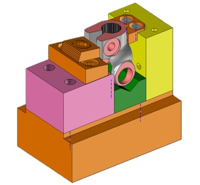
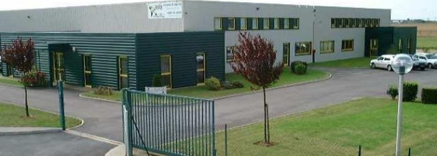

Robin Henriot
Découvrez qui je suis à travers ce portfolio, mes compétences, mes passions et mes réalisations !
Qui suis-je ?
Enchanté, je m'appelle Robin Henriot, étudiant en génie mécanique à l'IUT d'Orléans et technicien en bureau des méthodes chez Traven Technology en tant qu'apprenti.
Voici une courte vidéo pour me présenter :
Mon parcours d'études

Lycée Vaucanson
2021 - 2024Obtention de mon baccalauréat en série technologique, avec mention bien, en 2024.

IUT d'Orléans
2024 - 2027Attiré par la mécanique et l'industrie, j'ai choisi de poursuivre mes études en BUT GMP à l'IUT d'Orléans.
Polytech - Cycle préparatoire PeiP D
2024 - 2027En intégrant le BUT GMP, j'ai aussi intégré le cycle préparatoire Polytech (PeiP D). Cela m'a permis de mettre un pied dans le monde des écoles d'ingénieurs, en plus de solidifier mes connaissances dans les matières scientifiques.
Activité Professionnelle

Stage en entreprise
Dans le cadre de ma deuxième année de BUT GMP, j'ai réalisé un stage de 3 mois chez Traven Technology où j'ai mené une étude sur la mise en production d'une nouvelle référence de pièces.

Alternance chez Traven Technology
J'ai réalisé ma troisième année de BUT GMP en alternance chez Traven Technology. Lors de celle-ci, j'ai mené plusieurs projets : la poursuite de ce que j'avais commencé en stage, l'industrialisation d'une nouvelle référence de pièces, ainsi que la mise en place et la réalisation d'un DOE suite à l'intégration d'une nouvelle machine.
Projets Académiques

Projet de BUT 2 : intégration d'un capteur de couple sur un banc moteur
Lors de ma deuxième année de BUT GMP, j'ai réalisé un projet qui consistait à intégrer un capteur de force pour mesurer le couple généré par un moteur sur un banc d'essais. Ce projet m'a permis d'acquérir de nouvelles compétences, notamment en électronique et en programmation. Il a aussi été l'occasion de travailler en équipe et de développer des compétences en gestion de projet.
Compétences
CAO
Maîtrise de plusieurs logiciels de CAO comme TopSolid, Creo et SolidWorks, pour la réalisation de pièces et d'assemblages complexes.
Conception mécanique
Utilisation et maîtrise de différents systèmes et outils pour la réalisation de systèmes mécaniques complexes.
Contact & CV
On reste en contact ?
N'hésitez pas à m'envoyer un message ou à m'appeler directement pour discuter de futurs projets.
Consultez mon parcours en détail :
Télécharger mon CV (PDF)